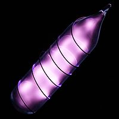

Numero atomico: 2
Massa atomica: 4,003
Temperatura di fusione (°C): -272
Temperatura di ebolizione (°C): -269
Energia di prima ionizzazione (kj/mol): 2372
Elettronegatività (secondo Pauling): --
Densità: 0,18
Numeri di ossidazione: --
Configurazione elettronica: 1s2
Maggiori Informazioni